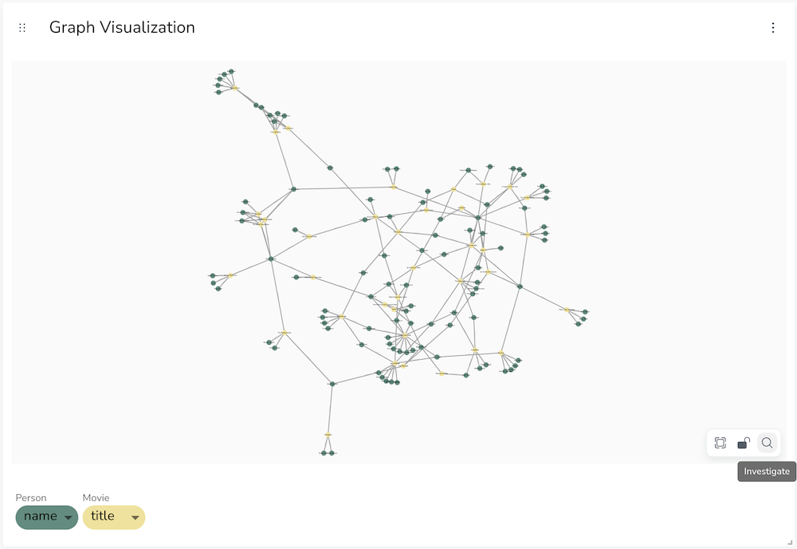

|
This documentation pertains to the (legacy) unsupported version of NeoDash. For users of the supported NeoDash offering, refer to NeoDash commercial. |
Bloom Integration
|
This documentation pertains to the (legacy) unsupported version of NeoDash. For users of the supported NeoDash offering, refer to NeoDash commercial. |
NeoDash can be linked to Neo4j Bloom perspectives by using Bloom Deep Links. This functionality allows you to combine the power of graph reporting (NeoDash) with intuitive graph exploration (Bloom).
Bloom Deep-Linking
To link NeoDash to a Bloom perspective, you will need to:
-
Create a Neo4j Bloom perspective.
-
Define a Bloom Search Phrase for the perspective.
-
Generate a Deep Link for your perspective and respective search phrase. This requires that you have a Server-hosted Bloom installation running.
-
Use the deep link you created in either:
-
an iFrame Report (optionally passing in the dashboard parameters into the search phrase).
-
a Graph Report (Adding your deep link inside the `Drilldown Link' field under advanced settings):
-
